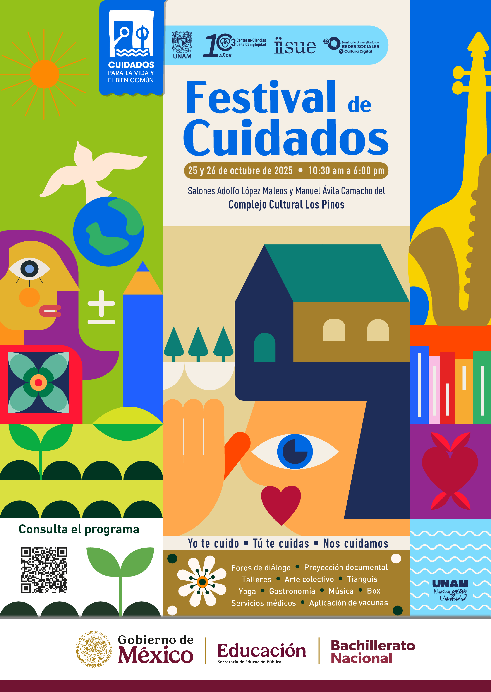
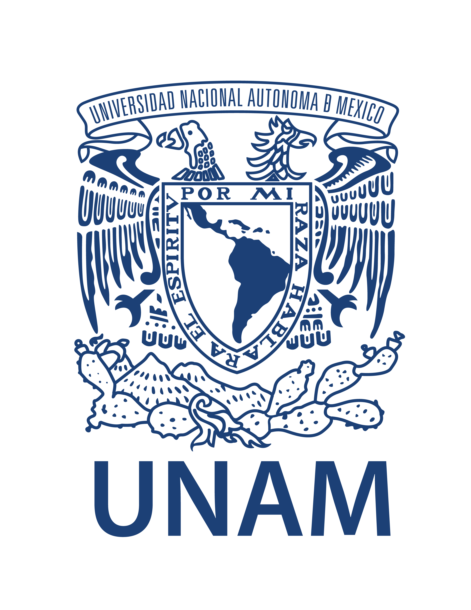
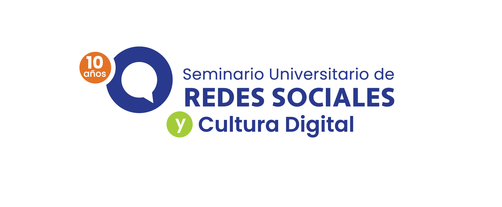

El Festival de Cuidados (FDC)

El Festival de Cuidados fue un espacio para reflexionar
sobre el cuidado como una forma de estar y habitar el
mundo. Promovió conversaciones, experiencias y acciones
colectivas para construir comunidades más sanas,
solidarias y equitativas.
En su primera edición, reunió a la UNAM, la SEP y diversas
instituciones comprometidas con el bienestar, el medio
ambiente y la cultura de paz.
Descargar boletín

Instancias aliadas:




Ejes temáticos
Cuidado de la salud
psicoemocional y física
Promovió la atención a las emociones, el cuerpo y la mente a través de talleres, charlas y actividades recreativas.
Cuidado del medio
ambiente
Fomentó la relación consciente con la naturaleza, el reciclaje, el consumo responsable y el respeto por el entorno.
Cuidado de la paz y la
dignidad humana
Buscó fortalecer el respeto, la empatía y la convivencia pacífica en nuestras comunidades.
Fecha y Lugar
de octubre

Actividades que se realizaron
- Charlas y diálogos con especialistas
- Talleres de bordado, yoga y box
- Actividades para el cuidado emocional
- Exámenes médicos gratuitos
Descargar
programa
completo


Dialogos del Festival
Mesa 1
Mesa 2
Mesa 3
Mesa 4
Mesa 5
Mesa 6
Mesa 7
Mesa 8
Mesa 9
Mesa 10